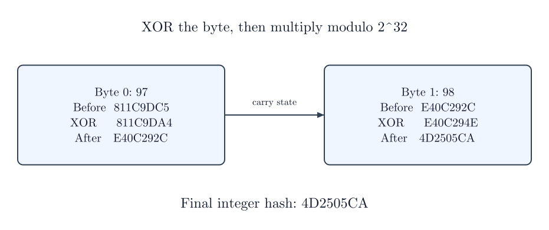
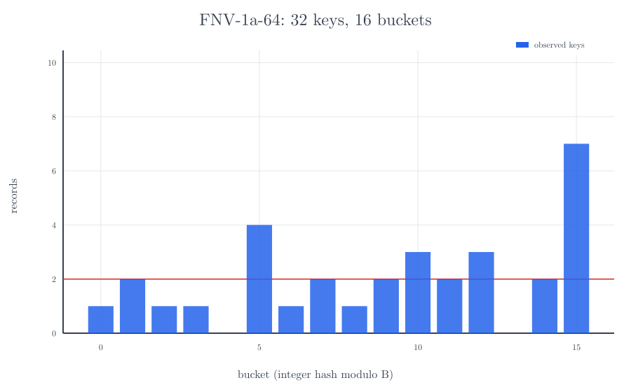
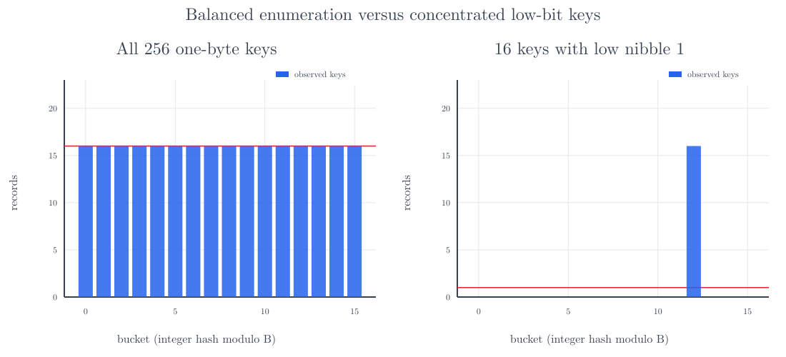
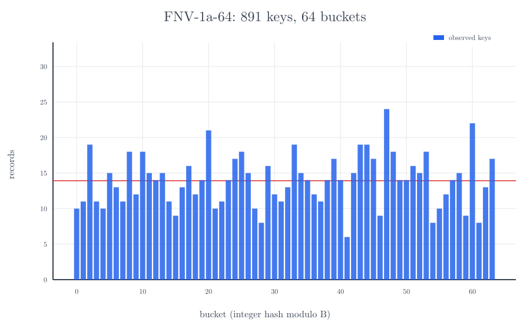
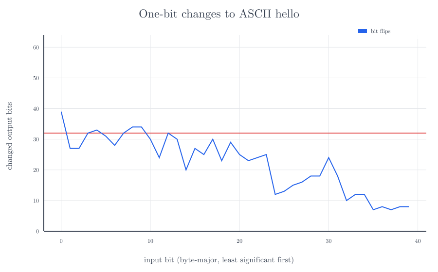

FNV-1a: byte updates, buckets and the low-bit trap
Abstract
A hash table must turn byte keys into bucket indices, but a compact hash value does not by itself guarantee balanced buckets. This report follows a two-byte FNV-1a calculation, reproduces the original 32-word experiment, and derives a family of distinct keys that all enter one low-bit bucket. Exhaustive one-byte controls and Titanic passenger names separate integer-hash collisions, bucket collisions and duplicated records. A final sensitivity experiment shows why a few changed-bit counts cannot establish cryptographic diffusion. Every number and figure comes from the canonical native hash loop or a reusable native analysis helper.
Two bytes, two actual updates
Start with the 32-bit offset basis and consume the two bytes of ASCII ab, 97
and 98. Each step first XORs its byte into the accumulator and then multiplies
by an odd prime modulo the word range. The records below are captured by the
same loop that computes the ordinary hash; they are not a second implementation
of the algorithm. Hexadecimal columns preserve every bit without conversion
through a floating-point number.
#include <dm/dm.hpp>
int main() {
dm::mkdir("build");
const auto trace = dm::algorithms::fnv1a_trace("ab", 32);
std::print("{}\n", dm::algorithms::fnv_trace_table(trace).to_md());
dm::graphics::Diagram diagram(65, 1000);
dm::graphics::DiagramNodeStyle style;
style.width = 5.4;
style.height = 2.6;
style.font_size = 20;
for (const auto &e : trace.steps) {
diagram.node(std::format("s{}", e.index), {8.0 * e.index, 0},
std::format("Byte {}: {}\nBefore {:08X}\nXOR {:08X}\nAfter {:08X}",
e.index, e.byte, e.before, e.xored, e.after),
style);
if (e.index) diagram.edge("s0", "s1", "carry state");
}
diagram.text({4, 2.3}, "XOR the byte, then multiply modulo 2^32", 24).text(
{4, -2.3}, std::format("Final integer hash: {:08X}", trace.value), 24).save_svg("build/fnv_states.svg");
}| index | byte | before | xored | after |
|---|---|---|---|---|
| 0 | 97 | 811C9DC5 | 811C9DA4 | E40C292C |
| 1 | 98 | E40C292C | E40C294E | 4D2505CA |

ab. Each complete record contains its byte index, unsigned byte and before/XOR/after values.The method and its exact arithmetic
For word width w, offset basis H0 and odd prime P, the update is
The native 32-bit interface uses basis 2166136261 and prime 16777619; the 64-bit interface uses basis 14695981039346656037 and prime 1099511628211. Bytes are unsigned, embedded NULs are included, and no terminator is added. These are integer interfaces. Displaying an integer in hexadecimal is distinct from serializing the digest as the little-endian byte vector specified by RFC 9923, Section 2.3.
An n-byte hash performs n XOR updates and n modular multiplications. These selected operations do not count loop control, indexing, allocation, comparisons in a surrounding hash table, or CPU instructions. At fixed word width, hashing takes O(n) time and O(1) auxiliary state. Retaining one complete byte record per update instead takes O(n) space.
Because P is odd, gcd(P,2w)=1 and multiplication by P has a modular inverse. For a fixed byte, the state update is a permutation. Consequently the 256 possible one-byte inputs have distinct full-width hashes. This does not make hashes of arbitrary strings collision-free: more than 2w possible keys cannot fit injectively into 2^w values.
The original 32 words: measure, do not certify uniformity
The original word list is retained in its original order. Its bucket rule takes the lowest four bits of the 64-bit integer hash, which is equivalent to reducing modulo 16. The two reference values are also recomputed. The word list is a fixed fixture, not an independent random sample.
#include <dm/dm.hpp>
int main() {
dm::mkdir("build");
std::print("Empty 32-bit hash {:08X}; ASCII a {:08X}.\n\n",
dm::algorithms::fnv1a_32(""), dm::algorithms::fnv1a_32("a"));
const auto profile =
dm::algorithms::fnv_bucket_profile(dm::algorithms::fnv_example_words());
std::print("{}\n", profile.table().to_md());
std::print("{}\n",
profile.summary().select({"keys", "occupied", "max_load",
"mean_load", "bucket_pairs",
"hash_pairs"}).to_md());
profile.plot().size(900, 560).save_svg("build/fnv_words.svg");
}Empty 32-bit hash 811C9DC5; ASCII a E40C292C.
| bucket | keys |
|---|---|
| 0 | 1 |
| 1 | 2 |
| 2 | 1 |
| 3 | 1 |
| 4 | 0 |
| 5 | 4 |
| 6 | 1 |
| 7 | 2 |
| 8 | 1 |
| 9 | 2 |
| 10 | 3 |
| 11 | 2 |
| 12 | 3 |
| 13 | 0 |
| 14 | 2 |
| 15 | 7 |
| keys | occupied | max_load | mean_load | bucket_pairs | hash_pairs |
|---|---|---|---|---|---|
| 32 | 14 | 7 | 2 | 38 | 0 |

For loads n0 through nB−1, the number of unordered record pairs sharing a bucket is
The expectation follows by summing one indicator per pair. It is a reference model, not a theorem that FNV hashes this fixture uniformly. In particular, the original report's near-uniformity conclusion is stronger than its experiment supports. Even perfect balance for one fixture would not establish performance on another distribution or resilience to chosen keys.
Checking the theory: a complete one-byte census and a low-bit counterexample
Modulo 16, both native bases are 5 and both primes are 3. For a one-byte key b,
All 16 byte values whose low nibble is 1 therefore enter bucket 12. Their full-width hashes are distinct, but they produce 120 bucket-collision pairs. Conversely, enumerating all 256 byte values gives exactly 16 records in every bucket, since the low-nibble transformation is a permutation. Both results are properties of these controlled input sets; neither implies universal balance.
#include <dm/dm.hpp>
int main() {
dm::mkdir("build");
const auto all =
dm::algorithms::fnv_bucket_profile(dm::algorithms::fnv_byte_keys());
const auto low =
dm::algorithms::fnv_bucket_profile(dm::algorithms::fnv_byte_keys(4, 1));
std::print("All 256 bytes:\n\n{}\nSame low nibble:\n\n{}\n",
all.summary().select({"keys", "occupied", "max_load",
"bucket_pairs", "hash_pairs"}).to_md(),
low.summary().select({"keys", "occupied", "max_load",
"bucket_pairs", "hash_pairs"}).to_md());
auto left = all.plot(), right = low.plot();
left.title("All 256 one-byte keys").y_limits(0, 23);
right.title("16 keys with low nibble 1").y_limits(0, 23);
dm::graphics::RLayout::create(1, 2).add(left).add(right).size(1100, 500).title("Balanced enumeration versus concentrated low-bit keys").fit_panels().save_svg("build/fnv_low_bits.svg");
}All 256 bytes:
| keys | occupied | max_load | bucket_pairs | hash_pairs |
|---|---|---|---|---|
| 256 | 16 | 16 | 1920 | 0 |
Same low nibble:
| keys | occupied | max_load | bucket_pairs | hash_pairs |
|---|---|---|---|---|
| 16 | 1 | 16 | 120 | 0 |

More generally, reduction modulo 2^k depends only on the corresponding low k bits at each update. An input bit at position k or higher cannot change this low residue. For the least significant bit, the especially simple identity is
This explains the counterexample without a statistical argument. RFC 9923 discusses diffusion limitations and XOR folding; this report measures the existing raw-modulo interface and does not claim that folding solves every distribution problem.
A dataset example: Titanic passenger names
The bundled canonical Titanic dataset supplies passenger names as byte keys. The
analysis uses the Name column directly: no name normalization, tokenization or
locale-dependent case conversion is introduced. Records with duplicated names
would remain separate bucket records while contributing only one distinct key to
the full-hash collision census.
#include <dm/dm.hpp>
int main() {
dm::mkdir("build");
const auto data = dm::datasets::titanic();
if (data.null_count("Name"))
throw std::runtime_error("Missing passenger names require an explicit policy");
const auto &names = data.get_column<std::string>("Name").values();
const auto p32 = dm::algorithms::fnv_bucket_profile(names, 64, 32);
const auto p64 = dm::algorithms::fnv_bucket_profile(names, 64, 64);
std::print("Dataset: {} rows, {} columns; {} distinct names; {} hashed bytes.\n\n",
data.nrows(), data.ncols(), p64.distinct_keys, p64.bytes);
std::print("32-bit hashes:\n\n{}\n64-bit hashes:\n\n{}\n",
p32.summary().select({"keys", "occupied", "max_load",
"bucket_pairs", "hash_pairs"}).to_md(),
p64.summary().select({"keys", "occupied", "max_load",
"bucket_pairs", "hash_pairs"}).to_md());
p64.plot().size(900, 560).save_svg("build/fnv_titanic.svg");
}Dataset: 891 rows, 12 columns; 891 distinct names; 24026 hashed bytes.
32-bit hashes:
| keys | occupied | max_load | bucket_pairs | hash_pairs |
|---|---|---|---|---|
| 891 | 64 | 22 | 6164 | 0 |
64-bit hashes:
| keys | occupied | max_load | bucket_pairs | hash_pairs |
|---|---|---|---|---|
| 891 | 64 | 24 | 6188 | 0 |

A zero observed full-hash collision count is a finite census result, not a guarantee for future names. The bucket load distribution matters to a particular table implementation, but this experiment does not measure equality-comparison costs, resizing, cache effects or lookup times. It cannot establish a universal speed ranking.
Sensitivity, actual collisions and complete-record limits
The following experiment flips each of the 40 bits in ASCII hello once and
counts changed output bits. Half the 64 output bits is an idealized reference
line, not a quality threshold. Late high input bits have limited routes into low
output bits, as the preceding modular argument predicts. A separate explicit
pair, costarring and liquid, demonstrates a full 32-bit collision. Adding a
duplicate of the first key tests the distinction between distinct keys and
records.
#include <dm/dm.hpp>
int main() {
dm::mkdir("build");
const auto flips = dm::algorithms::fnv_bit_flips("hello");
auto plot = dm::graphics::RPlot::create();
plot.line(flips.get_column<double>("input_bit").values(),
flips.get_column<double>("changed_output_bits").values(),
"bit flips", {37, 99, 235});
plot.abline_h(32, {220, 38, 38}, 1.5).title("One-bit changes to ASCII hello").x_label("input bit (byte-major, least significant first)").y_label("changed output bits").y_limits(0, 64).size(900, 560).save_svg("build/fnv_sensitivity.svg");
const auto stats = flips.describe_numeric("changed_output_bits");
std::print("{} flips; mean changed bits {:.3f}; range {:.0f} to {:.0f}.\n\n",
flips.nrows(), stats.mean, stats.min, stats.max);
const auto collision =
dm::algorithms::fnv_bucket_profile({"costarring", "liquid", "costarring"},
16, 32);
std::print("{}\n",
collision.summary().select({"keys", "distinct_keys",
"bucket_pairs", "hash_pairs"}).to_md());
std::print("The two distinct keys have 32-bit hashes {:08X} and {:08X}.\n\n",
dm::algorithms::fnv1a_32("costarring"),
dm::algorithms::fnv1a_32("liquid"));
try {
(void) dm::algorithms::fnv1a_trace("ab", 32, 1);
} catch (const std::length_error &) {
std::print("A one-record quota rejects the complete two-byte trace.\n\n");
}
std::print("Admitted records: {}; empty-input records: {}; embedded-NUL records: {}.\n",
dm::algorithms::fnv1a_trace("ab", 32, 2).steps.size(),
dm::algorithms::fnv1a_trace("", 32).steps.size(),
dm::algorithms::fnv1a_trace(std::string("a\0", 2), 32).steps.size());
}40 flips; mean changed bits 22.250; range 7 to 39.
| keys | distinct_keys | bucket_pairs | hash_pairs |
|---|---|---|---|
| 3 | 2 | 3 | 1 |
The two distinct keys have 32-bit hashes 5E4DAA9D and 5E4DAA9D.
A one-record quota rejects the complete two-byte trace.
Admitted records: 2; empty-input records: 0; embedded-NUL records: 2.

Conclusion
The native ordinary hashes retain their byte-for-byte behavior while their shared trace exposes every actual update. Exact enumeration can look perfectly balanced, yet a different family of distinct keys can collapse into one low-bit bucket. The original word fixture and the Titanic names therefore support statements about their measured occupancies only. A reproducible full-width collision and the algebraic low-bit dependency show why FNV must not be treated as a cryptographic primitive.
Trace quotas count complete byte records, not bytes of memory or peak process RAM. Ordinary hashing remains constant-state; bucket census helpers retain counts and temporary dictionaries, and the controlled bit-flip experiment intentionally hashes multiple copies. These costs are separate from the cost of one native hash call.
References and implementation scope
- L. Noll, K. Vo, D. Eastlake 3rd and T. Hansen (2026), The FNV Non-Cryptographic Hash Algorithm, RFC 9923. Sections 2 and 2.3 define the update and integer/byte serialization distinction; Sections 1.4 and 6 discuss limitations. https://www.rfc-editor.org/rfc/rfc9923.html
- Canonical implementation:
include/datamunge/algorithms/fnv_hash.hpp. Native report helpers:include/datamunge/algorithms/fnv_analysis.hpp.